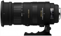

器材库 > 35mm画幅AF变焦镜头 > DG 50-500/4.5-6.3 APO OS HSM

详细规格
镜头类型
远摄变焦镜头
发布日期
2010-02-22
焦距
50mm-500mm
最大光圈
f/4.5-f/6.3
最小光圈
f/22
视角（对角）
46.8-5
镜头结构
22片/16组
光圈叶片
9片
最近对焦距离
50-180cm
最大放大倍率
0.322倍
驱动马达
HSM（超声波马达）
滤镜口径
95mm
镜头卡口
Canon EF, Minolta/Konica-Minolta/Sony AF, Nikon AF, Pentax AF, Sigma SA
防抖
是
颜色
黑色
尺寸
104.4×219mm
重量
1970g
激动的心2017-05-10 10:434.5 分
操作性 4.50耐用性 4.50性价比 5.00解像力 4.00色彩还原 4.50机械结构 4.50
凯文尹2015-10-04 09:174.42 分
操作性 4.00耐用性 4.50性价比 5.00解像力 4.00色彩还原 4.50机械结构 4.50
caiwei19682014-01-15 23:524.5 分
操作性 4.50耐用性 4.50性价比 4.50解像力 4.50色彩还原 4.50机械结构 4.50
大汗0012013-10-30 15:054.58 分
操作性 4.00耐用性 5.00性价比 5.00解像力 5.00色彩还原 4.50机械结构 4.00
天山2012-05-22 19:244.58 分
操作性 4.50耐用性 4.50性价比 5.00解像力 4.50色彩还原 4.50机械结构 4.50
油田太子2011-07-10 21:554.83 分
操作性 5.00耐用性 5.00性价比 5.00解像力 4.50色彩还原 4.50机械结构 5.00
三月龙2011-02-22 21:253.5 分
操作性 3.50耐用性 2.00性价比 4.00解像力 3.50色彩还原 4.00机械结构 4.00
竹欣2011-01-13 22:214.08 分
操作性 4.00耐用性 4.00性价比 4.50解像力 4.00色彩还原 4.00机械结构 4.00
产品图 / 样片
适马 DG 50-500/4.5-6.3 APO OS HSM外观图
评测 / 相关文章
- 重炮来袭：适马 DG 50-500/4.5-6.3 APO OS HSM评测 （存档）
- 适马新镜50-500/4.5-6.3试片 （存档）
- ［资讯］自动对焦BUG 适马召回部分镜头 （存档）
- ［行情］索尼口适马50-500 DG OS发布 （存档）
- ［行情］适马新镜50-500/4.5-6.3正式上市 （存档）